Figure Collecting has a long history, with origins tracing back approximately 30,000 years to prehistoric times when early humans
crafted small animal figures from ivory. These however, weren't made with the intent to display, but rather used for spiritual rituals,
fertility symbols, or ancestral reverence.
Ancient Civilizations
In Ancient Egypt, Greece, and Rome, small terracotta, bronze, and stone sculptures depicting gods, mythic heroes, and warriors were
created for religious shrines and burial sites
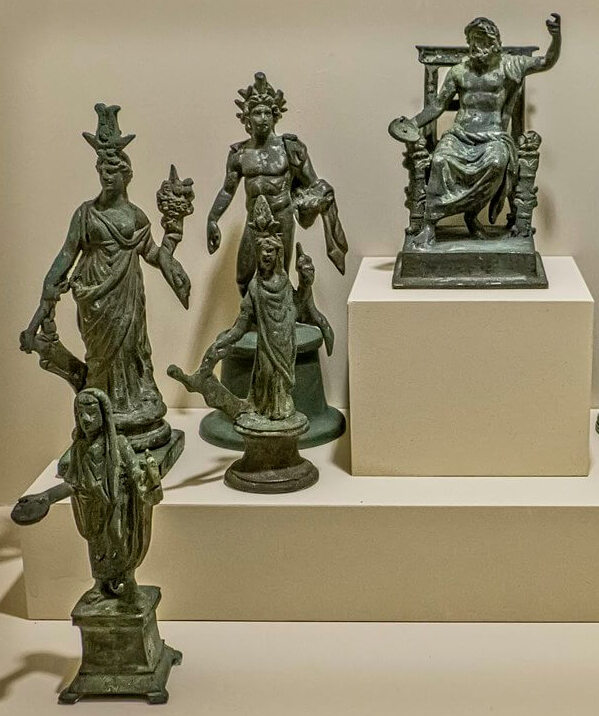
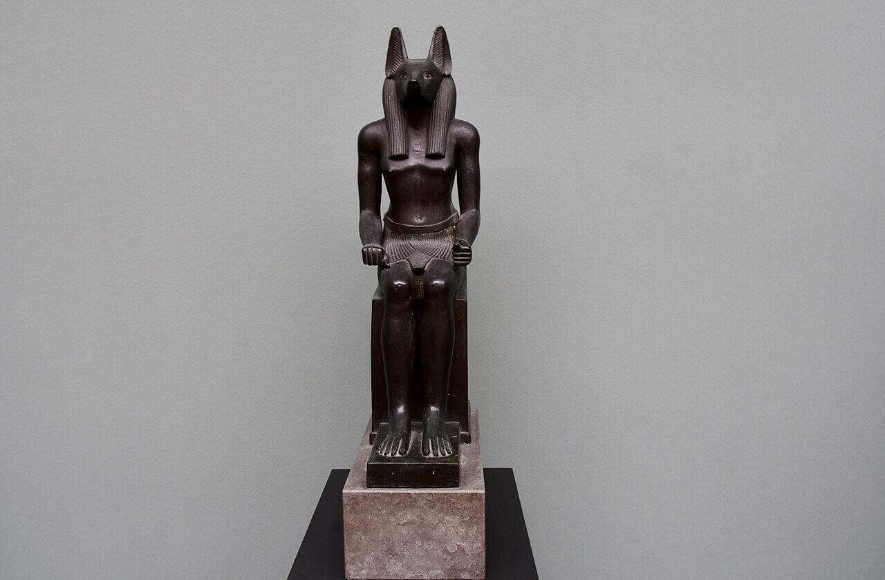
Roman Lararia Figurines
Egypt Anubis Statue/Figure (664-525 BCE)
While in Ancient China, detailed tomb figures (such as those from the Tang Dynasty) were crafted to accompany figures into the afterlife.
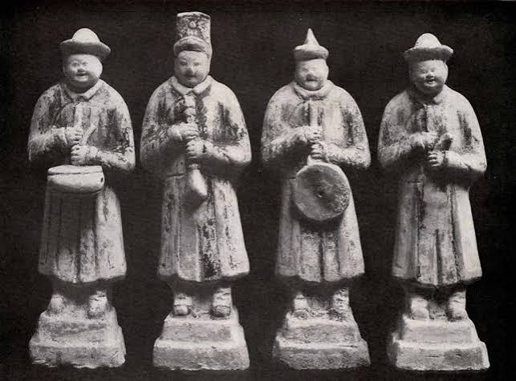
China's Tomb Figures (1368-1644 CE)
18th - 19th Century Porcelain & Pottery
By this point, deliberate, decorative collecting took off in Europe, with fine porcelain creations from Meissen and Dresden as well as
English Staffordshire pottery, marking the shift of small-scale sculptures into home decor and personal collections.
This is where it all began
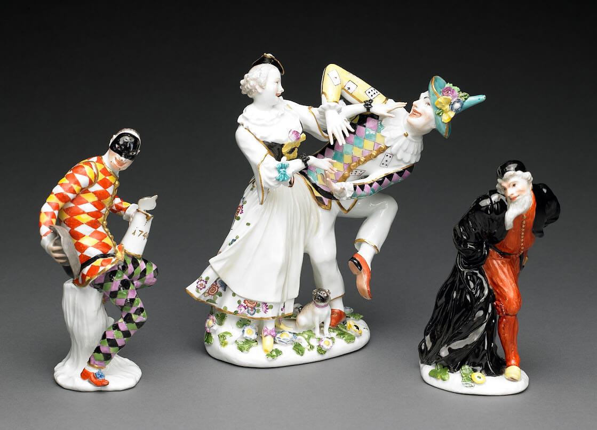
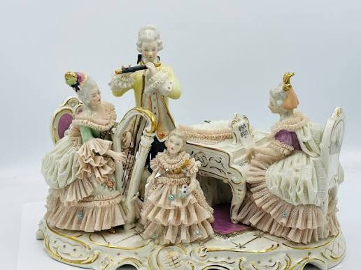
Meissen Porcelain Figures
Dresden Porcelain Figures
The Rise of the Action Figure (1960s – 1980s)
This is where the first Action Figure was made. Hasbro introduced the 12-inch G.I. Joe figure, to market a poseable figure to young boys
without using the word "doll", Hasbro coined the term "action figure". They did it first!
GI Joe Action Figure
1978 (The Star Wars Revolution)
Kenner revolutionized toy collecting by introducing 3.75-inch Star Wars figures. The smaller size allowed for cheaper manufacturing and
expansive vehicle playsets, driving widespread commercial collecting and trading among kids. Only up from here
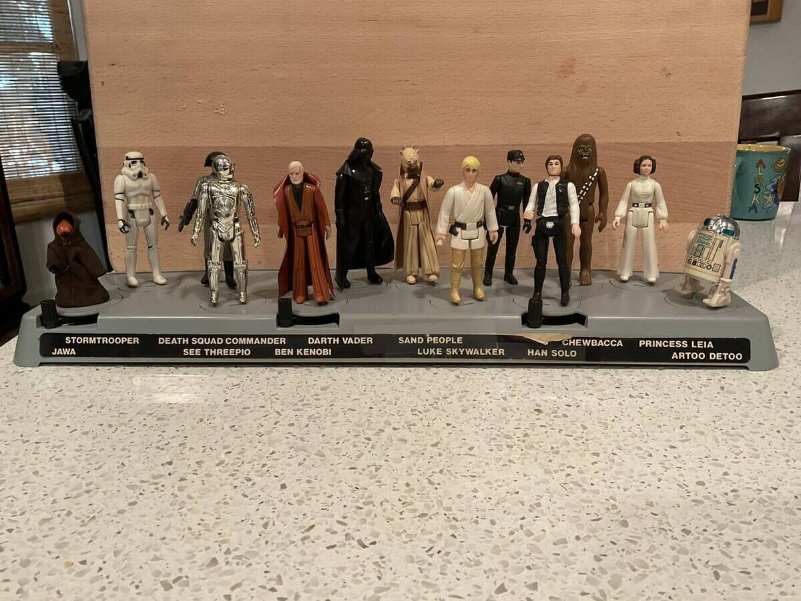
Kenner Star Wars Collectible Figures
The Art Toy & Urban Vinyl Movement (Late 1990s)
Designer Figures: Independent artists and designers (such as KAWS) began reinterpreting pop culture icons using urban vinyl and resin.
High-End Niche: These limited-edition designer figures shifted figurines into fine-art galleries and boutique markets, creating a bridge between
pop art and collectible toys. This is where the value began climbing
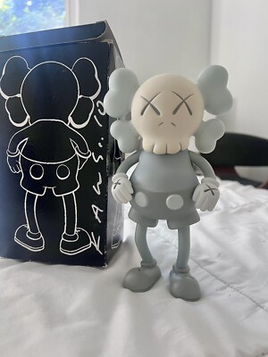
KAWS Figure 1999
Modern Pop-Culture & Anime Craze (2000s – Present)
Now we're back in the modern era. The global rise of anime and video games created a massive market for high-detail, pre-painted PVC and
resin figures (such as scale figures and Nendoroids).
Adult Nostalgia & Premium Collecting: Today, adult nostalgia and pop-culture fandoms have turned figure collecting into a multibillion-dollar
market, spanning everything from vintage 1970s and 80s action figures to premium statues and modern pop-culture collectibles. Thus, the hobby
of Figure Collecting.
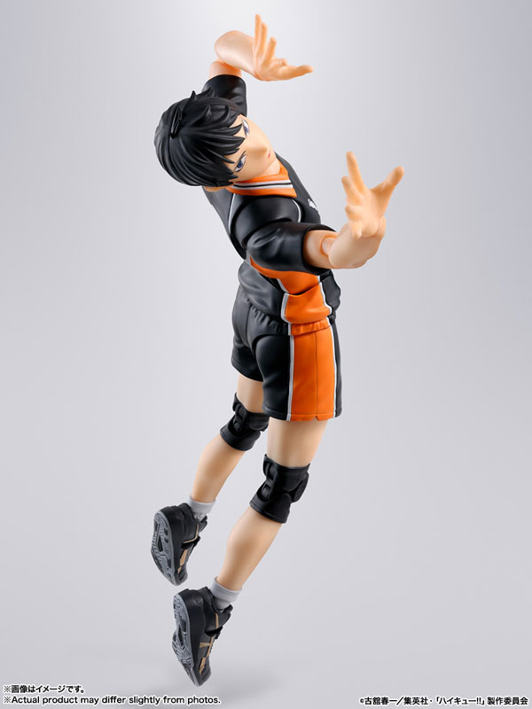
Toji Fushiguro Prize Figure
Matikanetannhauser Nendoroid
Kageyama S.H.Figuarts Action Figure
Shin Godzilla Scale Figure
Why do people collect figures?
When it comes to the why's, there are a multitude of reasons.
Reason 1: Nostalgia
Figures often act as physical time machines that connect collectors directly to cherished childhood memories and favorite stories.
Owning a physical representation of a beloved character helps people relive the comfort and joy of the shows, games, or comics they grew
up with. This turns a simple collection into a deeply personal display of identity and nostalgia. One such example is the 1978 Kenner Star Wars
Figures, with Star Wars being such a big series and having a long history, people are bound to collect figures to relive their childhood.
Reason 2: Art Appreciation and Aesthetics
With the times, modern figures are intricate, high-quality sculptures crafted with exceptional artistic detail and craftsmanship.
Collectors view these pieces as dynamic 3D artwork that enhances the aesthetic and decor of their personal living spaces. Displaying them
allows enthusiasts to celebrate and showcase their appreciation for character design, color, and sculpting techniques.
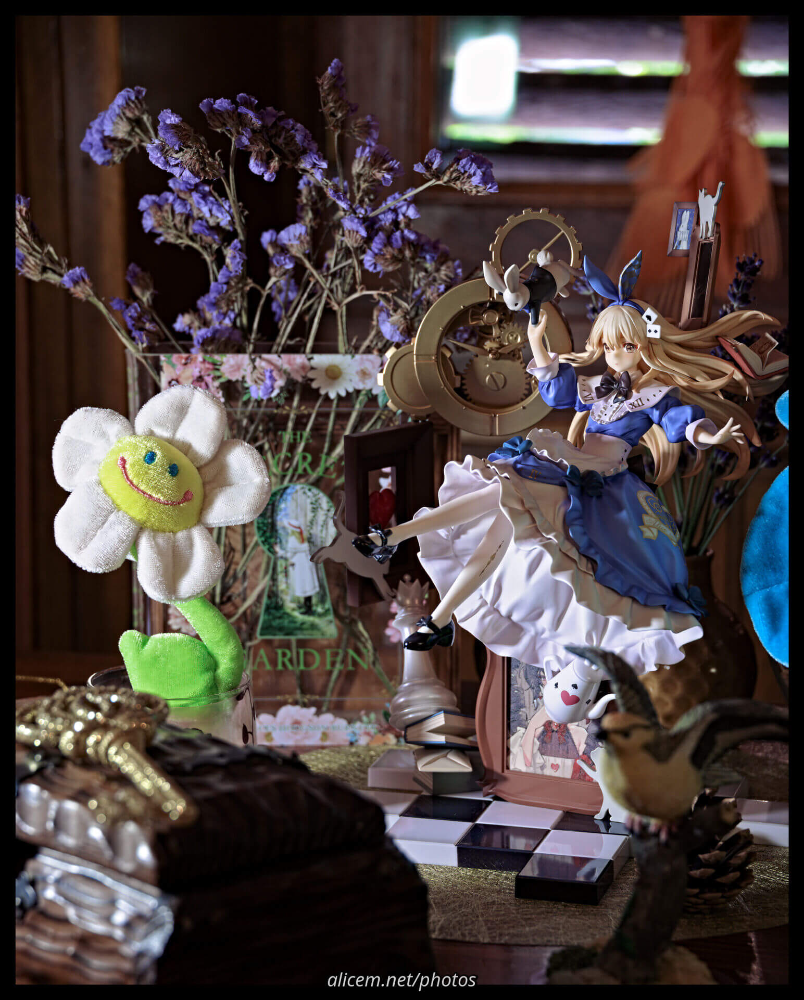
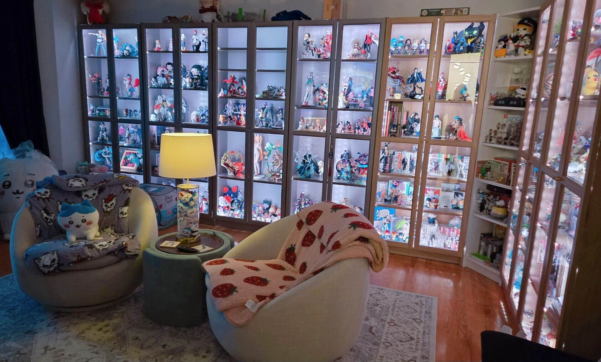
Figure Art Apprecitation
Figure Room Aesthetic
Reason 3: The Thrill of the Hunt and Completion
Psychologically, hunting down rare, exclusive, or limited-edition figures provides an exciting rush of dopamine and accomplishment.
Completing a specific set or lineup gives collectors a rewarding sense of order, structure, and goal achievement. This satisfaction
turns the process of searching, tracking, and acquiring into an addictive and engaging hobby.
Reason 4: Value and Investment
Some collectors acquire highly sought-after, limited-production pieces because they have a history of retaining or increasing their
monetary value over time. One such example is the KAWS Figure 1999, which currently goes for USD $3,000 to over $35,000, depending on the
condition, packaging, colourway and the signature of the artist or the 1979 Kenner Star Wars Boba Fett action figure worth $525,000.
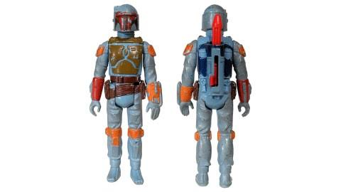
1999 KAWS Figure
1979 Kenner Star Wars Boba Fett
Reason 5: Community and Social Connection
Collecting offers a natural gateway into vibrant online communities, conventions, and fan groups with shared passions.
Trading, discussing, and showing off figure collections allows enthusiasts to bond and build meaningful friendships with like-minded people.
It turns an individual passion into a shared social experience that fosters a strong sense of belonging.
Conclusion
As shown, there is no fixed reason as to why people collect figures, some out of passion, some of value, and others simpliy to relive their
childhood. As for me, I collect them because of my interest of the anime, game or the character itself.